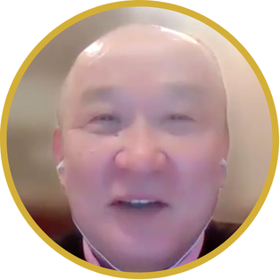

こんなお悩み、
ありませんか？
その悩みは、この
「資産型AI副業」無料講座で解決できます。
そもそも
「資産型AI副業」とは？

働かなくても、
収入が積み上がっていく副業のこと。
世の中の副業の多くは、「自分の時間を売って稼ぐ」形です。受託デザイン、動画編集、ライティング、配達代行 ── どれも、自分が動くのを止めた瞬間、収入もゼロになります。
一方「資産型AI副業」は、一度作った仕組みが、AIの力で勝手に動き続け、収入を生み出してくれる副業です。たとえば、AIで作った教材を販売する、AIで自動応答するLINE Botを月額契約で提供する、AIで作った電子書籍が毎月印税を運んでくる ── そういう"仕組み"そのものを作る働き方です。
つまり、「あなたの時間」ではなく「AIが動く仕組み」が、お金を運んでくる。これが資産型AI副業の本質です。
働き続ける副業 vs
資産として残り続ける副業
収入も止まる。
納品して終わり。来月もまた、
ゼロから次の案件を取りに行く必要があります。
自分が動かないと、収入もゼロ。
放っておいても入る。
月3万円の保守案件に変える。
（驚くほどカンタンにできるのです）
それを60件なら月に180万円。
1年間だと2,160万円。
AIに働いてもらい、収入を積み上げるスタイルです。
AIの力で副業を、
圧倒的に効率化する
AIが「あなたの代わり」に、考え、書き、作り、届ける。
あなたは「方向性」と「最初の設計」だけに集中すればOKです。
コンテンツ作り
を10倍速に
電子書籍・note記事・動画スクリプト・教材 ── 0からの執筆作業はAIが代行。あなたは"何を伝えるか"の選定と最終チェックだけ。
サービス化
を自動化
LINE Bot、顧客対応、コンサル業務、AIアシスタント。一度仕組みを作れば、AIが24時間動き続け、月額収入を運んできます。
販売・集客
も任せる
LP、広告コピー、SNS投稿、メルマガ。"売れる文章"も"届ける仕組み"も、AIに作らせて、自動で回します。
著者プロフィール

広島大学工学部でプログラミングに出会い、在学中に連続起業。子ども向けプログラミングスクール「TechChance!」（全国20店舗以上展開）を共同創業。学習アプリ開発会社を設立し、後に売却。サイバーセキュリティ教育会社なども起業。
広島大学大学院工学研究科情報工学専攻学習工学研究室を飛び級で卒業し、博士号（工学）を取得。未踏事業への採択実績あり。広島大学の学長特任補佐を務め、現在は広島大学の特任助教として学生の起業支援に取り組むと共に、「実践的な」AI教育が日本の発展のために必要だと痛感し、北村式・AI実践アカデミーを立ち上げる。
これまで延べ5,000名以上を指導。自身の不登校経験を原点に「ゼロからでも人生は変えられる」というメッセージを発信し続けている。
経歴＆メディア


全国紙にも掲載されました。

外務省からの依頼で、各国の若手政務官に講演


なぜ40〜60代にこそ、
資産型AI副業がぴったりなのか？
＝不労所得マシン
40〜60代が一番強いのは、「これまでの経験」と「業界の深い知見」を持っていることです。「現場で見てきたこと」「失敗から学んだこと」「クライアントの本当の悩み」── 若手にはマネできない、何十年分もの蓄積があります。
ところがその経験は、これまで "自分の頭の中" にしか存在しませんでした。コンテンツ化しようにも、書く時間も、編集スキルも、販売の仕組みも、自分一人では作れない。
そこにAIが入ると、すべてが変わります。あなたが知っていることをAIに伝えるだけで、文章・教材・サービス・LP・販売の仕組みまでが、勝手に形になる。しかも「えっ！？こんなものまでお金になるの？」と、あなたは驚くかもしれません。AIは「あなたの経験」を「資産」に翻訳してくれる存在です。
経験のある世代こそ、AI時代に最も価値が出る。これが、40〜60代に「資産型AI副業」が刺さる本当の理由です。
資産型AI副業で稼ぐ実例

会社員時代の知識は
会社の外では使い道がないと諦めていた。
月60万円の収入を生み出すことができ、
「もう老後資金を心配しなくていい」
具体的な収益化の道筋が見えない。
副業の収入は月数千円程度。
安定的な副収入を獲得。
「人生の選択肢が広がった」
個別対応で時間が消えるだけ。
収入の天井が見えていた。
月35万円の安定収入。
「働かなくても入ってくる感覚」
「でも、私には無理かも…」
という不安に、お答えします
3年後、
あなたはどちら側にいる？

同じ場所に立っている。
- 収入は本業のみ、不安は変わらない
- 「あの時始めていれば…」と後悔
- AI時代に取り残されたまま50代後半・60代
- 定年後の生活設計も見えないまま
- 「経験」は活かされず、ただ歳をとる

不労所得の柱を持っている。
- 月10〜30万円の副収入が安定して入る
- 1台目の仕組みが、2台目・3台目を生む
- 本業に縛られない、選択肢が広がる人生
- AIを使いこなす「攻めの世代」になる
- 経験が"資産"に変わり、誇りになる
違いを生むのは、才能でも年齢でもなく、
たった一つの「今日の行動」です。
よくある質問
はい、ご安心ください。本講座は専門用語を使わず、初めてAIに触れる方でも一つずつ実践できるようステップバイステップで解説しています。実際にアカデミー受講生の多くが40〜60代でパソコンが得意でない方です。
講師の北村は工学博士であり、延べ5,000名以上を指導してきた実績があります。本講座では学術的な裏付けと、実際に成果を出した受講生の事例を交えながら、再現性の高いノウハウを公開しています。机上の空論ではなく「実践して結果が出る」内容です。
はい、完全に無料です。LINEで友だち追加をしていただくだけで、3話の動画講座すべてをご視聴いただけます。個人情報の入力も不要ですので、安心してご登録ください。
副業に限らず、本講座で紹介するAI活用の仕組みは、業務効率化や新しいスキル習得にもそのまま応用できます。「AIで何ができるのか知りたい」「仕事をもっとラクにしたい」という方にもお役立ていただける内容です。
ございません。お届けするのは3話の動画講座と、あなたのお役に立つ情報のみです。配信が不要になった場合は、いつでもブロック（配信解除）していただけます。